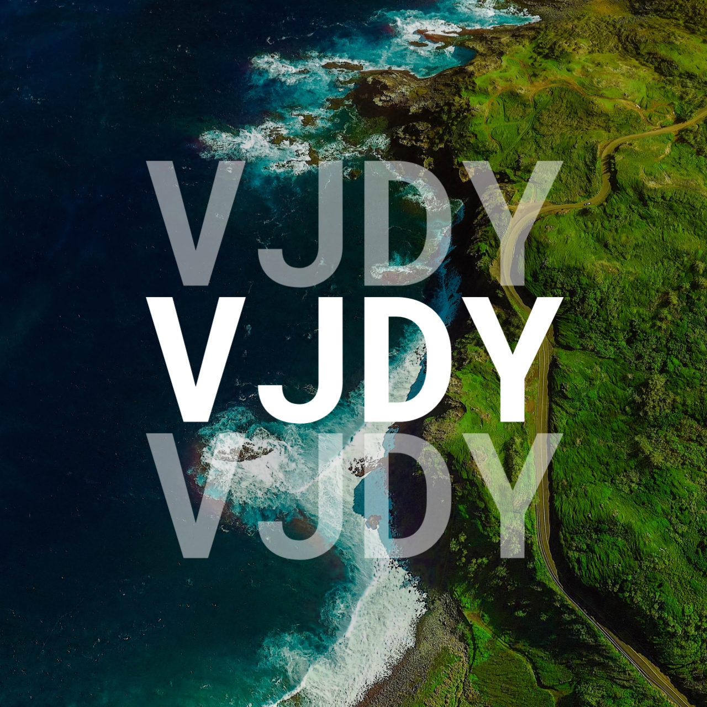

Official Icon
This is our official icon created in March 13, 2022 after the rename
for VJDY 2021. The logo is very basic but it gives a subtle look and
monospace feel.

Official Logo Colored
This is our official logo created in March 13, 2022 after the rename
for VJDY 2021. The logo has the background of the environment. which leads
to the location somewhere in Hawaii. the codename for this is Coastland.

Official Emblem
We've introduced the emblem for more identical detail to our
platform, it started as VJDY Official Productions, and sooner to be
VJDY Official Pictures in April 2025.
FM Station
We've introduced the VJDY FM, a fictional radio station that was
held only on events and occasions. It was started in 2023 as part of
our mixing audio thing.

Music Store
We've introduced VJDY Official Music Store, a music collection of our
open-source AI generated and owned-composition of music to use in our
content.
Sound Effects Studio
We've introduced the software of VJDY FM for Windows, which called
VJDY FM Sound Effects Studio in July 2025 as 1.5 release, it was a
PowerPoint application concept before. and it goes into the real
app. The app was built using Electron with Chromium bundle!
VJDY TV
We've introduced the VJDY TV before 2026. It was a test broadcast in
January 2026. and it was now held on every YouTube Livestream for
identical look.

VJDY TV On-Air Logo
This logo is accessible to see-through TV, even the background video
has too many element that cause the logo to become invisible.
Digital TrueSurround
On April 2026, We've introduced the new era of audio system called VJDY
Digital TrueSurround, it uses AAC MP4A and FLAC codec to
support 5.1 and 7.1 channels for TVs that doesnt have
Dolby Codec.
Digital TrueStereo
On July 2026, We've introduced the TrueStereo, which
to use on 2.1 and 3.1 setup. also, TrueStereo uses
MP3 with pure stereo format that it actually not uses
Joint Stereo.
Digital TrueStereo Joint
We've introduced also the TrueStereo in Joint, which uses
MP3 with modern stereo format that is actually Joint Stereo.
Digital TrueScene
On July 2026, We've also introducting the TrueScene, which
refer to the same Dolby True HD Vision, but uses True Color
Vibrancy and Saturation, and Sharpness Adjustment.